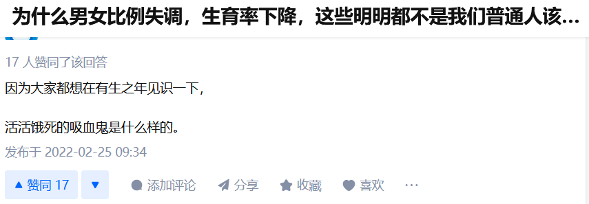
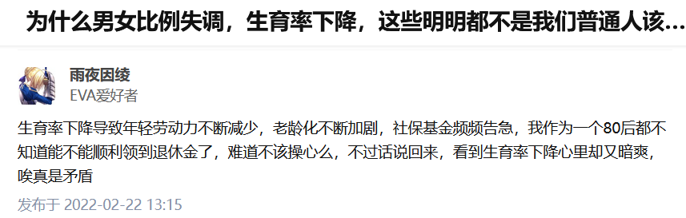

泰坦尼克号
泰坦尼克号沉没
相信大家都看过《泰坦尼克号》吧。没看过的强烈建议去看看。
本文不会讨论男主女主的悲惨爱情，也不会讨论剧情相关的任何内容。
只想讨论如果你在那艘船上，怎么样才能活下来。
首先是预知，但是大部分人也做不到预知。
在船上，露丝和杰克在甲板上目睹了船撞上冰山。他们虽然知道船撞上了冰山，但是严重性如何，会不会沉并不知道。
船长、船员是第一批知道船注定会沉的人。
安德鲁，就是泰坦尼克号的总设计师提醒了露丝，船一定会沉。
那么
能上船 = 生 ，
上不了船，那么能用木板或者其他东西让身体不接触冰冷的海水 = 有可能生还
其他情况，必死无疑
这让我想到了老龄化。一个社会的老龄化也是逐渐走向死亡的过程。
船不是马上就沉了，社会也不是马上就要立即走向老龄化的。
当船下一秒就要沉了，社会已经超级老龄化了，那么做什么都已经迟了呀。早干什么去了呢？

图上说明的第一、二、三等舱的乘客的生还率。红色的是能生还的几率。
船上如此，社会也是如此。
未来老龄化
作者：铃儿叮当
链接：https://www.zhihu.com/question/312151503/answer/613386242
来源：知乎
著作权归作者所有。商业转载请联系作者获得授权，非商业转载请注明出处。
中小学设施开始感觉有富余，大学录取率大大提高。
有大学学历的年轻一代，不愿意进厂，和从事没有技术含量的，重体力，对身体有伤害的底层职位，雇主会放宽招聘年龄。
象富士康这类劳动密集型企业会迁离。制造业因为很难招人，会出现产业空心化。沿海地区会有不少外籍劳工，政府部门对此态度，会外松内紧，有应急处理预案。
城市房价稳中有降。边远地区，会出现大量房屋被废弃。城市医疗设施虽然扩建，还是严重不足。
社会进入老龄化，老年人食量减少，全国粮食消耗量会明显减少。纸尿裤销量成人款大大超过婴幼儿款。多数人个人收入趋于稳定，难有增长，开支又有不确定因素，消费观念趋于保守。对最新消费类电子产品，开始抵触抗拒，譬如手机，笔记本电脑升级换代意愿大大降低。
养老院人满为患，一位难求。居家护理薪酬待遇奇高。家庭成员经济收入不高，或者没有子女的长者，如果患病，经济容易陷入困境。无力聘请护理。城市会出现一批官方，半官方，辅助失能长者的机构。
城市公共空间会增建方便长者的设施，有经济实力的长者会考虑海外养老。会通过《失能人员管理办法》，《安乐死管理办法》等一系列相关法律。无理取闹，通过轻微违法被拘留，从而达到被照料的现象，自杀现象很常见。
社会阶层更加固化，割裂，国民心态更加自私，冷漠，独身，不婚占比居高不下，拖累生育率继续走低。年轻人保守，性格封闭，性欲低下，佛系，怕投入，不喜欢冒险，试错。喜欢聚集在一线城市。女权意识大大增强，美容整容业发达，流行过度整容这样的病态审美观。网上会经常看到暗讽女性对待婚恋挑剔，跪舔外籍男相关帖子。
很多社会改革难以开展，象夺金无望的体育竞技项目，数学这类基础学科研究后继无人。
升舱
对于在泰坦尼克号上的普通乘客来说，升舱是大大提高生存率的方法之一。
包括并不限于
让一等舱、二等舱的乘客带你（通过结婚）
成为船员（进入体制内，会好一点，但是船沉了体制内也好不到哪里去）
升舱。（从三线城市去往一二线城市。头等舱生还几率大。）
去其他船（出国）
跟船长提建议，配备望远镜以免撞到冰山（从政当官）
当然每种方法都不容易。但是希望船沉的越快越好，希望头等舱乘客和自己一起死什么的。做梦吧，头等舱乘客跑的比谁都快。



中国人都是命运共同体，中国不好的话，社会底层首先完蛋（养老金发不出来，延迟退休，工作到死），牢记第一张图，头等舱的乘客是不可能伤筋动骨的。
穷人更应该爱国。因为国家富强，穷人可能会跟着收益，但是国家弱小，穷人一定会跟着受害。富人是没有国籍的，他们随时有能力给自己换国籍。